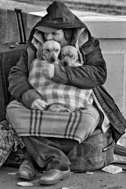

|  |
Kaybetmeyeceğiz..Farkında olmadan insanlığımızı kaybeder, mutluluğun getirdiği sesleri duyamaz olduk.Sokakta yürürken, otobüste eve işe okula giderken gördüğümüz küçük bir çocuğa gülümseyemez, o sevimli kahkasını görmek için çeşitli şaklabanlıklar yapamaz olduk, çünkü her an anne ya da babasının ters bir tepkisiyle karşı karşıya kalabiliyoruz. Bir yere giderken göz göze geldiğimiz birine gülümsemek yerine ya göz deviriyoruz ya da hemen başımızı çeviriyoruz.Belki de çoğu insan gibi siz de bilmiyorsunuz ancak cebinden 'yürürken bir kişi bile bana gülümserse vazgeçeceğim' yazılı not çıkan adam intihar etti.Ama orda asıl intihar eden insanlıktı.Kaybedilmeye yüz tutmuş olan insanlık.. Ama kaybetmeyeceğiz, insanların kalbi ne kadar taşlaşmış olsa da, karşılaştığınızda gülümsediğiniz biri size ters ters baksa da bir sonraki gülümsemenize karşılıksız kalamayacaktır. Sokakta gördüğünüz bir kedi ya da köpeğin başını okşadığınızda size minnetle bakarken bir insanın sizin samimiyetinize karşılıksız kalması son derece yaralayıcıdır. Buna izin veremeyiz. Sadece ben neyi değiştirebilirim demeyin, bir insan çok şeyi değiştirebilir. Yeter ki inanın, inanın ki kaybetmeyelim. Birbirine bakan beton yığınları sadece binalar olarak kalmalı.. Biz birbirine sevgiyle bakan, güvenen, huzur mutluluk ve sevgi için çabalayan sıcacık kalpliler olarak kalalım. Küçük bir çocuğun gülümsemesinde kalalım, o zaman dünya çok daha yaşanabilir hale gelicektir. |